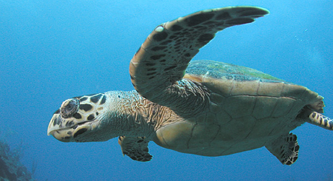

Eretmochelys imbricata, a Tartagura-de-pente - Encontrada em regiões tropicais, a tartaruga-de- pente encontra-se criticamente em perigo, de acordo com a IUCN. Estima-se que sua população tenha diminuído em 80% no último século.
São tartarugas de porte médio, com comprimento que varia entre 60 e 100 cm, e que podem pesar mais de 100 kg. Além de serem comidas como iguarias, as tartarugas-de-pente são caçadas para terem seus cascos removidos e utilizados na elaboração de objetos como decorações e joias, por exemplo.
Fonte: https://marsemfim.com.br/animais-marinhos-ameacados-de-extincao/ - Acesso: outubro de 2018.